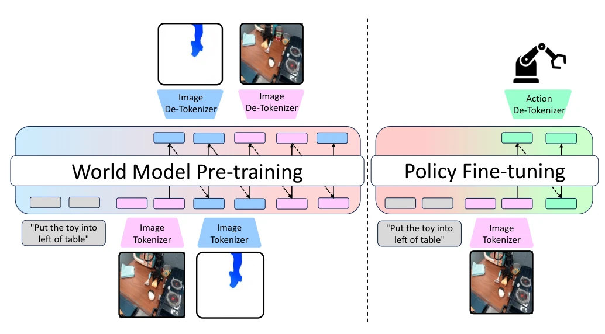
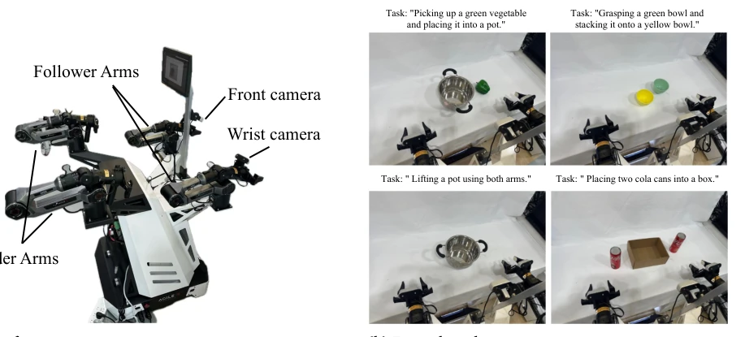
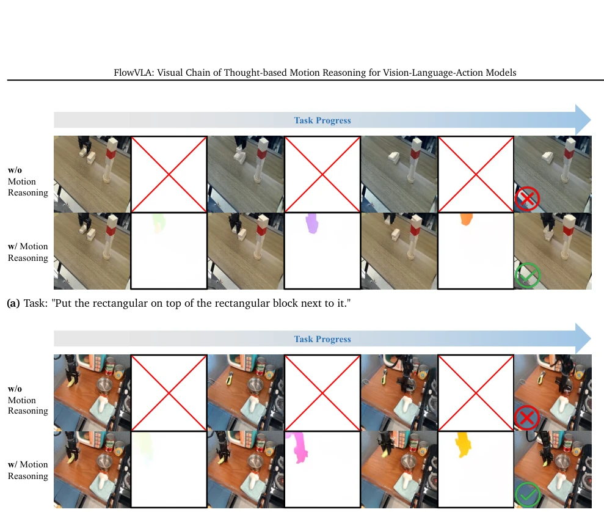
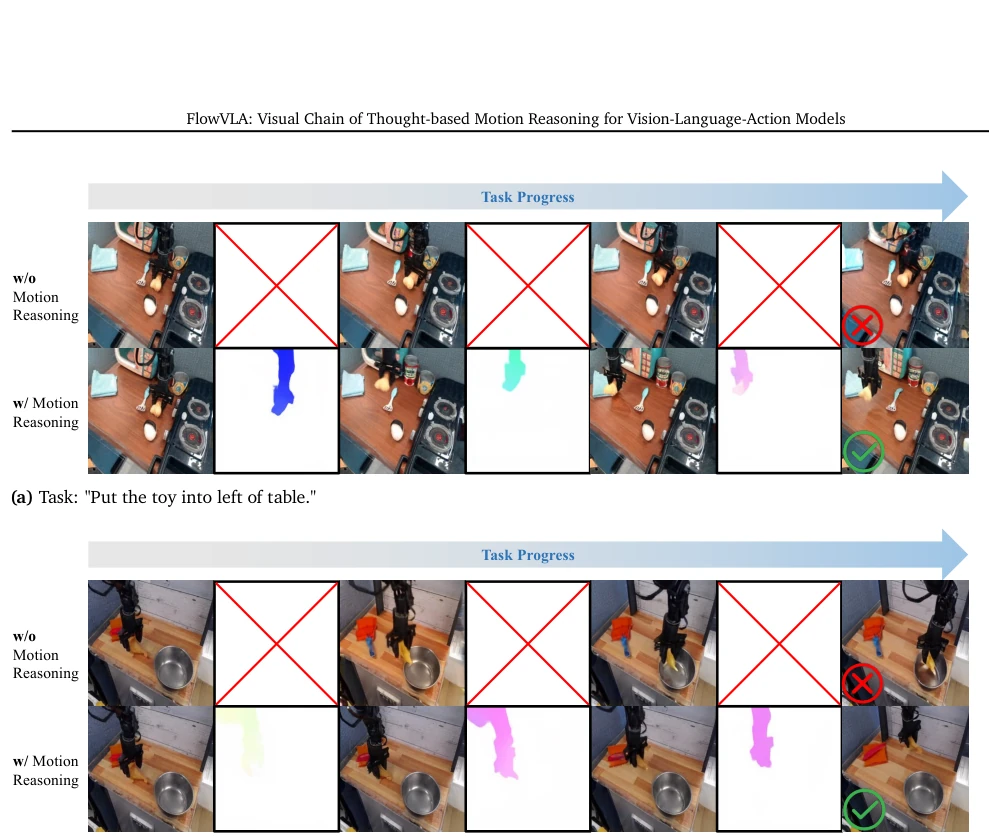
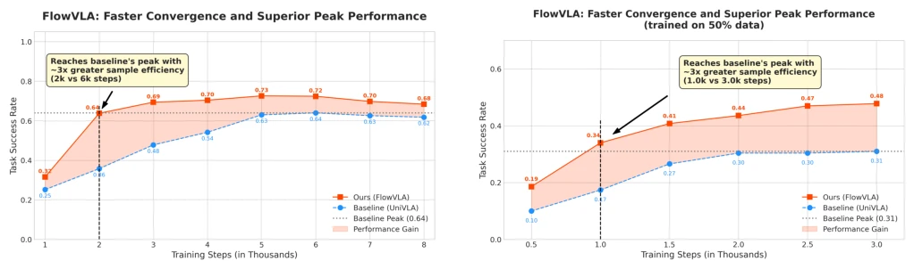

FlowVLA adds a "Visual Chain of Thought" to VLA world models, forcing the model to calculate optical flow first before guessing the next frame. This approach indeed cures the "pixel copying trap", making physical predictions more reliable and sample efficiency higher. But forcing optical flow into the Transformer as a Token, isn't it a bit "CoT for the sake of CoT"? After all, optical flow is also predicted itself, will adding an intermediate step increase error accumulation? However, the experimental data is indeed impressive, performing well on LIBERO and real robots, indicating that explicit motion modeling still has merit in embodied intelligence. Furthermore, the unified Tokenizer design avoids the complexity of multi-branch architectures, which is praiseworthy, but whether a drop in optical flow prediction accuracy will drag down overall performance still needs observation.
研究动机Motivation
现有 VLA 世界模型（如 UniVLA Wang et al., 2025, WorldVLA Cen et al., 2025）通常直接预测下一帧 $v_t o v_{t+1}$。这种隐式学习容易陷入“像素复制陷阱”，导致长视界预测模糊且物理不合理（Ming et al., 2024）。更重要的是，被动预训练与主动策略学习之间存在域差距，导致微调效率低。FlowVLA 指出缺乏显式运动推理是根本原因，试图通过中间步骤弥合这一鸿沟。直接预测忽略了物理因果，模型往往学到的是相关性而非因果性，导致在分布外场景泛化能力差，无法适应复杂的物理交互环境。
Existing VLA world models (such as UniVLA Wang et al., 2025, WorldVLA Cen et al., 2025) typically directly predict the next frame $v_t \to v_{t+1}$. This implicit learning easily falls into the "pixel copying trap", leading to blurry long-horizon predictions and physical unreasonableness (Ming et al., 2024). More importantly, there is a domain gap between passive pre-training and active policy learning, leading to low fine-tuning efficiency. FlowVLA points out that the lack of explicit motion reasoning is the root cause, attempting to bridge this gap through intermediate steps. Direct prediction ignores physical causality; models often learn correlation rather than causality, resulting in poor generalization in out-of-distribution scenarios and inability to adapt to complex physical interaction environments.
方法Method
核心是 Visual CoT，将预测分解为 $v_t o f_t o v_{t+1}$。训练分两阶段：1. 世界模型预训练，使用统一 VQ-GAN Tokenizer (Esser et al., 2021) 处理 RGB 帧和光流图，自回归预测交错序列。2. 策略微调，输入指令和观测，预测动作 Token。创新点在于统一模态 Tokenization，无需额外架构，且强制模型先推理运动再生成外观，增强了因果性。光流通过 VideoJAM (Chefer et al., 2025) 方法映射为 RGB 图像，复用图像 Tokenizer，避免了专用模块。损失函数包含流预测和帧预测两部分，确保中间推理步骤的物理正确性。序列格式为 $v_0, f_0, v_1, f_1...$，而非分组，保证了因果链的连贯性，使模型能利用预测的运动信息指导下一帧生成。
The core is Visual CoT, decomposing prediction into $v_t \to f_t \to v_{t+1}$. Training is divided into two stages: 1. World model pre-training, using a unified VQ-GAN Tokenizer (Esser et al., 2021) to process RGB frames and optical flow maps, autoregressively predicting interleaved sequences. 2. Policy fine-tuning, inputting instructions and observations, predicting action Tokens. The innovation lies in unified modality Tokenization, requiring no extra architecture, and forcing the model to reason motion first then generate appearance, enhancing causality. Optical flow is mapped to RGB images via the VideoJAM (Chefer et al., 2025) method, reusing the image Tokenizer, avoiding dedicated modules. The loss function includes two parts: flow prediction and frame prediction, ensuring the physical correctness of intermediate reasoning steps. The sequence format is $v_0, f_0, v_1, f_1...$, rather than grouped, ensuring the coherence of the causal chain, enabling the model to utilize predicted motion information to guide the next frame generation.

Figure 2: Model Architecture of FlowVLA. Our model instantiates the two-stage training paradigm in Figure 1. (Left) Stage 1: World Model Pre-training with Visual CoT. Input frames are encoded into appearance tokens (pink). The model then autoregressively predicts an interleaved sequence of motion tokens (blue) and future appearance tokens. Our proposed vt →ft →vt+1 prediction forces the model to reason about dynamics before forecasting the future. For conceptual clarity, the Image and Flow Tokenizers are visualized separately; in practice, they are the exact same module applied to both appearance and motion inputs. (Right) Stage 2: Policy Fine-tuning. The pre-trained world model is adapted for action prediction. Conditioned on a text instruction (gray) and the current observation (magenta)

Figure 3: AgileX Cobot dual-arm platform and real-world manipulation tasks: (a) system setup: leader arms are user-operated, follower arms mirror the actions. Vision is provided by a front camera for global scene view and wrist cameras for close-up workspace observation. (b) representative single-arm and bimanual operations: from simple single-arm tasks to complex long-horizon bimanual manipulations.
Tested on LIBERO, SimplerEnv, and AgileX Cobot real robots. Compared with baselines such as OpenVLA (Kim et al., 2024b), UniVLA, FlowVLA performs better on long-horizon tasks (Table 1, 2). Real task success rate significantly improved (Table 3). Ablation experiments prove that CoT structure and flow supervision are crucial (Table 4). Figure 6 shows faster convergence with less data, verifying the sample efficiency advantage. Physical rationality analysis (Fig 4) shows baseline models exhibit physical errors such as robotic arm disappearance, while FlowVLA maintains coherence. Semantic alignment analysis (Fig 5) also indicates FlowVLA can better understand the correspondence between instructions and actions, proving the positive transfer effect of explicit motion reasoning on policy learning.

Figure 4: Analysis of Physical Plausibility on the Bridge V2 Dataset. This figure highlights common physical failures in the baseline model. In both examples, the baseline model (top row) struggles to maintain physical consistency, leading to implausible outcomes such as a disappearing manipulator or erratic object behavior. In contrast, FlowVLA (bottom row), guided by its motion-first reasoning, produces stable and physically coherent predictions that accurately reflect the scene’s dynamics.

Figure 5: Analysis of Semantic Alignment on the Bridge V2 Dataset. This figure illustrates the baseline’s failure to align predictions with language instructions. While the predicted frames from baseline model (top row) might appear visually plausible at a glance, the resulting motion does not correspond to the specified task (e.g., moving an object in the wrong direction). FlowVLA (bottom row) again demonstrates superior performance, correctly interpreting the command and generating a corresponding visual trajectory. This underscores that our Visual CoT not only improves physical realism but also enhances the model’s ability to ground language in action.

Figure 6: Training Efficiency Comparison in Full and Low-Data Regimes. Success rate versus training steps for FlowVLA and the baseline. Our method converges dramatically faster and reaches a higher peak performance across both the full dataset (a) and a data-scarce setting (b). The performance gap widens significantly with limited data, highlighting the superior sample efficiency of our approach.